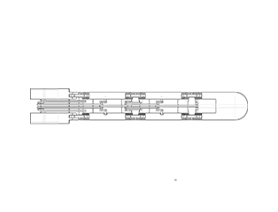
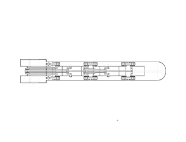

Project 1. Whack a Mole


 


I am super interested in spatial design. I like using transmission structures like gears and cranks to build different devices with different functions.
I have been a huge fan of precise robots since I was young. Every time when I see a machine driven by several transmission components, I dream to build one on my own, and that dream is finally achieved when I take IAT 106. To create such a device, I used a web called Onshape, for it provides me with a visualized modeling environment.
The whole process took about four weeks and five major steps. The installation is based on a box. At the top center of the box, there is a ball back and forth. Beside the box, there is a hand holding on a box. The hand is keep managing to tipping the ball. Yet the chance the hand can reach the ball is fully random.
The installation build up with several different forms of transmission. There are different combinations of cranks works together to drive the finger move. There are also gears and transmission shaft to deliver the power to the hands.
Step 1: Ideation and Sketching
Ideation
During the ideation period, I decided to design a hand that clenched its fist. This idea was inspired by the movie Iron Man and Terminator since both movies provided a close-up shot when they clenched their fist while checking body status.
Sketching
The next step was to develop several plans to make the finger move. This step took me the largest percentage of time since I had tofind a perfect balance between the aesthetics of the structure and the possibility of implementation. Finally, I chose to use the crank as the transmission part to drive the finger move.
Set Size and Ratio
The next step was to finalize the length and width of each component. The purpose of this step was to make the palm looks more real, and each transmission component inside the device works perfectly. The picture shown on the right side was a crank used in the middle of the finger
Step 2: Components Modeling
Components
After I finished all paperwork, I started to build small components for each transmission component, for instance, cranks. Though the most size calculation has done during the Sketching, there is still some data that need to be adjusts. Datas like the thickness of each components and other changes during the designing changes will be recalculated during this process.
Assembling
After I finish build the basic components, I started to assembling them into each mechanical Components like cranks and crankshaft. This process is also critical, since I need to test whether those components could assembled and work as I designed.
Step 3: Finger Assembling and Texting
Components
After I finished all paperwork, I started to build small components for each transmission component, for instance, cranks. Though the most size calculation has done during the Sketching, there is still some data that need to be adjusts. Datas like the thickness of each components and other changes during the designing changes will be recalculated during this process.
Assembling
After I finish build the basic components, I started to assembling them into each mechanical Components like cranks and crankshaft. This process is also critical, since I need to test whether those components could assembled and work as I designed.